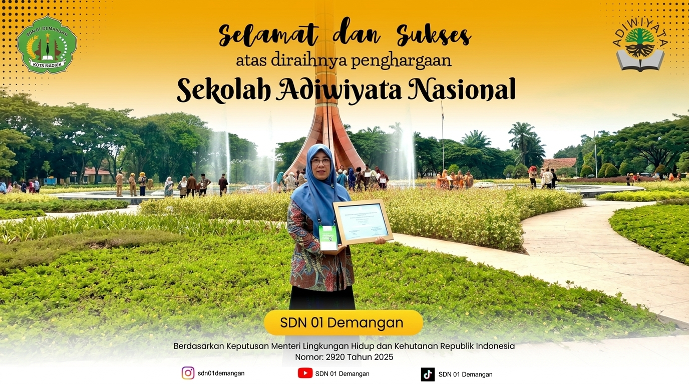

📷 Tambahkan foto Adiwiyata diassets/programs/adiwiyata.jpg
Ringkasan Program
Program budaya lingkungan yang menempatkan kepedulian terhadap kebersihan, kesehatan, penghijauan, dan pengelolaan lingkungan sebagai bagian dari kehidupan sekolah. Adiwiyata menjadi ruang pembiasaan agar warga sekolah mengenali lingkungan sebagai bagian penting dari proses pendidikan.
Pelaksanaan
Pelaksanaan diarahkan melalui pembiasaan ramah lingkungan, penghijauan, pengelolaan sampah, serta kegiatan yang menjaga lingkungan sekolah tetap bersih dan sehat. Nilai kepedulian lingkungan dihadirkan dalam aktivitas warga sekolah agar tidak berhenti sebagai pengetahuan, tetapi menjadi kebiasaan yang dilakukan bersama.
Hasil & Dampak
Program mendukung terbentuknya budaya sekolah yang lebih peduli terhadap kebersihan, kesehatan, dan kelestarian lingkungan. Pembiasaan tersebut juga memperkuat identitas SDN 01 Demangan sebagai sekolah yang memberi perhatian pada lingkungan dan perilaku hidup yang bertanggung jawab.